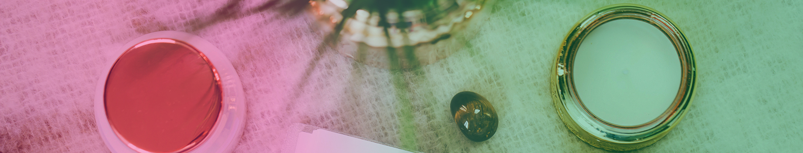

-

About
I’m a healer, teacher and writer.
I have been drawn to spiritual practices since I was young, and always had a deep desire to make the world a calmer, happier and brighter place. I finally made my dream come true in 2014 when I manifested a total lifestyle change, and escaped my 20-year career in IT to work full time helping busy women to slow down and connect with healing life force energy to find their inner calm in a hectic world.
I started studying spirituality and exploring divination (tarot, runes, pendulum dowsing and I Ching) as a teenager and was always drawn to the wild, open spaces where I felt connected to a force greater than myself. Over the years I have developed my natural intuition through daily self-healing, meditation and exploration of practices from many spiritual traditions.
After studying Classics at university I built a career as a Senior IT Project Manager in the Civil Service and in my spare time I continued to study and explore my spirituality, always trusting my intuition to guide every part of my life.
My life with Reiki began over 15 years ago with my initial training in Reiki Jin Kei Do. From there I went on to qualify as a practitioner in Seichem, Angelic and Karuna® Reiki, and as a Usui Reiki Master Teacher. The more I researched our ability to heal and create our own magic I was drawn to qualify as a Tarot Reader, Meditation Teacher, Clinical Hypnotherapist, NLP Practitioner and Thai Yoga Massage Therapist.
Reiki is the guiding light in my life and has enabled me to develop personally and spiritually, find my life purpose, and be better equipped to deal with the ups and downs of life from day to day stress to recovery from major trauma, bereavement and illness.
The 5 Reiki Precepts form a blueprint to follow for a simple, happy and purposeful life and are at the heart of everything I do. Like most people I have a hectic diary but always make time for daily meditation and self-healing (sometimes just 5 or 10 minutes a day – I don’t always have time to sit still for hours at a time!) and the Reiki principles are central to my personal spiritual practice, enabling me to tap into my own inner wisdom and intuition for guidance.
Everything starts with you. Your relationships, your work life, your dreams, your goals. It all starts with YOU making up your mind about how you want to be. Our beliefs and thoughts about ourselves and the world around us are often the cause of our emotional problems and physical conditions. By investing in yourself with nurturing self-love and healing you can move away from limiting beliefs, change your thinking and your life for the better. Your thoughts create your reality. When you consciously slow down and connect with your inner calm and wisdom you can learn to know yourself, trust yourself, and be there for everyone else when they need you.
Whether you feel stuck in a rut or are at a crossroads in your life, once you are committed to change your life story you can be confident that time with me will connect you with your own inner stillness, calm and wisdom. You will be supported to shine a light on your situation, enabling you to see clearly what possibilities are open to you, the changes you can make and most importantly how you can make this happen.
I keep a daily gratitude journal and reviewing the little things that make me smile keeps me focused on the happiness that can be found in day to day life. The simple things in life are what make me truly happy and keep me calm – spending time with my friends and family, being in nature, finding beauty in the ordinary and exploring new places. I also love exploring the world, writing, photography, making jewellery, knitting socks and living by the sea with my partner, step-daughter and cat. On a professional level I am most happy when I am sharing my passion and energy with clients and students so that they can find their own path to peace, stillness and calm.

Alongside healing and teaching I write about everyday practical magic – our innate ability to shape our own lives through tapping in to the unlimited flow of the Universe. Our thoughts create our reality and I am here to guide and inspire people to make their dreams a reality. My passion is using life force energy and creativity to help others connect with their inner wisdom to gain insight and clarity on the next at every stage of their healing journey.